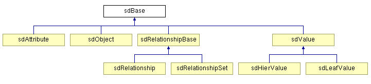

|
 |
 |
||||||
|
|
|
||||||
In order to facilitate the sharing of information about design changes, OpenAccess provides a way to describe OpenAccess objects in terms of their relationships, attributes, and attribute values. Such a description of a data model is known as its schema definition.
Developers can create schema definitions for OpenAccess managed objects, oaAppDefs, oaAppObjects, or a different data model altogether.
This document describes:
The sd prefixed public classes provide the ability to create schema definitions. The sdBase class is the base class for all the schema definition classes that can be used to define the schema of a design.

The following table outlines the classes that inherit from sdBase.
Class Name |
Description |
|---|---|
| sdObject | Defines the types of the public objects in the data model. |
| sdAttribute | Defines the types of attributes that can be defined on public objects. |
| sdRelationshipBase | Defines the types of relationships that can exist between public objects. |
| sdRelationship | Defines a relationship between a single "from" class and a single "to" class. For example, a relationship from an oaNet to an oaInstTerm. |
| sdRelationshipSet | Defines a relationship between a single "from" class and multiple "to" classes. The 'to' set of classes is a list of valid classes that can have this relationship. For example, the relationship on the beginning connection of an oaRoute can be one of oaTerm, oaInstTerm, oaSteiner, oaPin, oaShape, or oaVia. |
| sdValue | Defines the types of values for attributes. These values can be simple or complex. |
| sdLeafValue | Defines a basic type, such as an unsigned integer. |
| sdHierValue | Defines a composite type, such as an oaBox or oaPoint. |
A namespace refers to a set of rules for creating and interpreting legal names within an application. Namespaces (sdNameSpaces) can be used to categorize schema definitions in OpenAccess. For example, schema definitions for different data models would most likely have their own namespaces. The sdSession object manages all the sdNameSpaces registered.
Before creating your own schema definitions, create a separate namespace for them. For example:
sdNameSpace *appSchema = new sdNameSpace("appSchema", 1);
A namespace can use the schema of another namespace.
This example creates a schema definition called mySegment that defines a path segment. The following aspects of a path segment are considered:
First, the sdObject for the path segment must be created. Each sdObject must have an integer identifier and string name combination that is unique. In the example below, the integer 0 and the string mySegment mark this particular sdObject as the definition for path segments. The schema object is created in the appSchema namespace.
sdObject *mySegment = new sdObject(0, "mySegment", "My path segment example", true, appSchema, ...);
The oaPathSeg class inherits from oaShape. This is represented in the schema by specifying a super object when creating the sdObject for the path segment. Note that the schema definitions for any super objects must be created before they can be used in the constructors for other sdObjects. The sdObject constructor has the following arguments:
sdObject::sdObject(unsigned int id,
const std::string &name,
const std::string &description,
bool concrete,
sdNameSpace *nameSpace,
const ObjectVector &superObjects
)
A path segment has begin and end point attributes. An sdAttribute must belong to an sdObject, such as mySegment. Each sdAttribute:
The following create the sdAttributes for the begin and end points:
sdAttribute(0, "segmentBeginPoint", "path segment begin point", ..., appSchema, mySegment, pointValue); sdAttribute(1, "segmentEndPoint", "path segment end point", ..., appSchema, mySegment, pointValue);
Where pointValue is an sdValue that defines the begin or end point. The sdAttribute constructor has the following arguments:
sdAttribute(unsigned int id,
const std::string &name,
const std::string &description,
const Actions &actions,
sdAttributeContainerType containerType,
bool isObjectIdentifier,
sdNameSpace *nameSpace,
const sdObject *object,
const sdValue *value);
An sdRelationship is used to express the path segment style. Each sdRelationship:
The following creates the sdRelationship for the style for the path segment:
sdObject *segmentStyle = new sdObject(1, "segmentStyle", "path segment style example", true, appSchema, ...); sdRelationship(0, "style", "path segment style", ..., appSchema, mySegment, segmentStyle);
The sdRelationship constructor has the following arguments:
sdRelationship(unsigned int id,
const std::string &name,
const std::string &relDescription,
sdRelationshipOrderingType orderType,
const Actions &actions,
sdRelationshipAssociationType associationType,
sdRelationshipMultiplicityType multiplicityType,
sdRelationshipContainerType containerType,
sdNameSpace *nameSpace,
const sdObject *from,
const sdObject *to);

Copyright © 2001-2010 Cadence Design Systems, Inc.
All rights reserved.